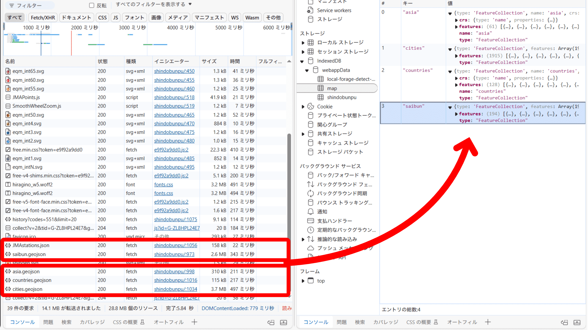
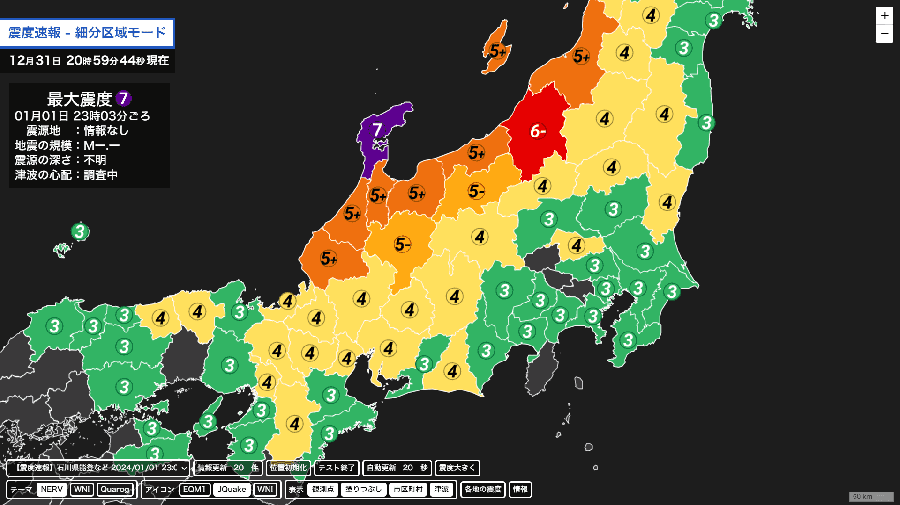

読み込み改善・アイコン変更のお知らせ
読み込み改善・アイコン変更のお知らせ今年ではみなさまのたくさんのご支援をいただきました。本当にありがとうございました。
そしてこれからも暖かく見守っていただけますと幸いです。
震度分布図 for MiyakoCamをアップデートしました！
今後もさらに機能を追加したり、デザインを改良する予定です。
アップデートの詳細は以下のとおりです。
-
新機能
-
読み込みの削減をしました。
地図等の更新する必要がないデータはブラウザに保存しておき、アクセスするたびにデータを取得することがないようにしました。
これにより初回読み込み時と比べて約13MBの通信量の削減をいたしました。(ブラウザ開発者ツールによる測定)
-
アイコンの変更をいたしました。
アイコンに外縁をかけることにより、塗りつぶしの中でもアイコンの視認性を向上させました。
また、アイコンをPNGファイルからSVGファイルに変更し、読み込み容量・負荷の削減、高解像度端末での精細な表示に対応しました。



-
読み込みの削減をしました。